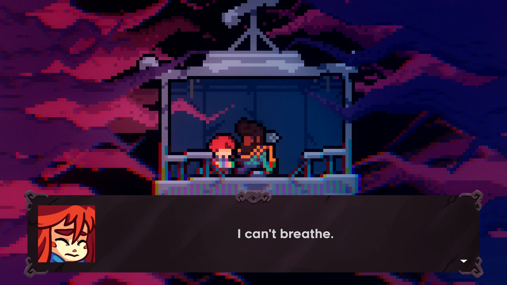
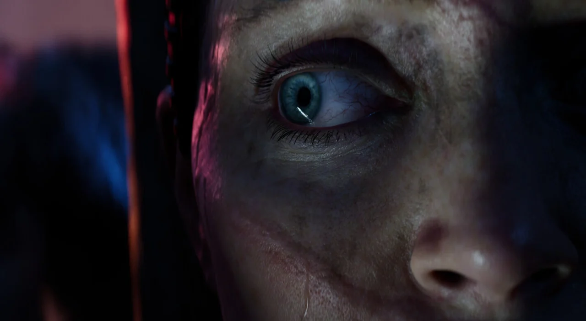
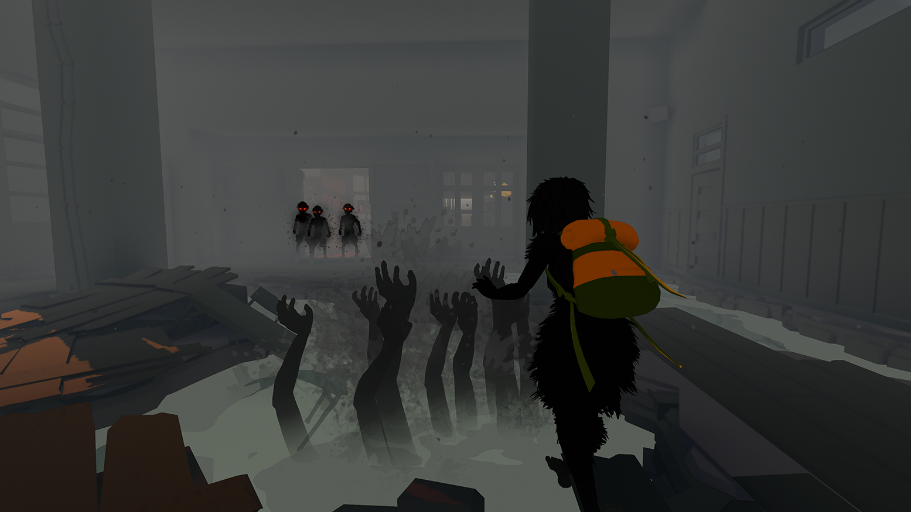
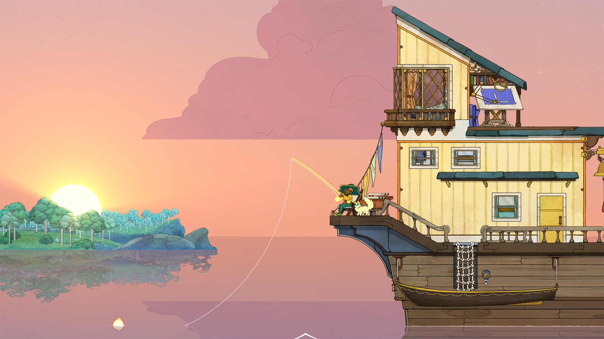
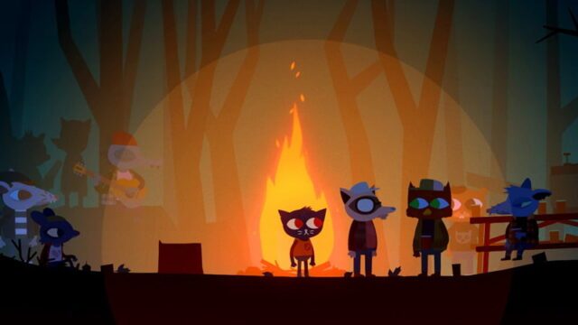

Galeria

Celeste — ansiedade e ataques de pânico

Gris — os cinco estágios do luto

Hellblade: Senua's Sacrifice — psicose

Sea of Solitude — isolamento e solidão

Spiritfarer — luto e "deixar ir"

Night in the Woods — depressão e ansiedade